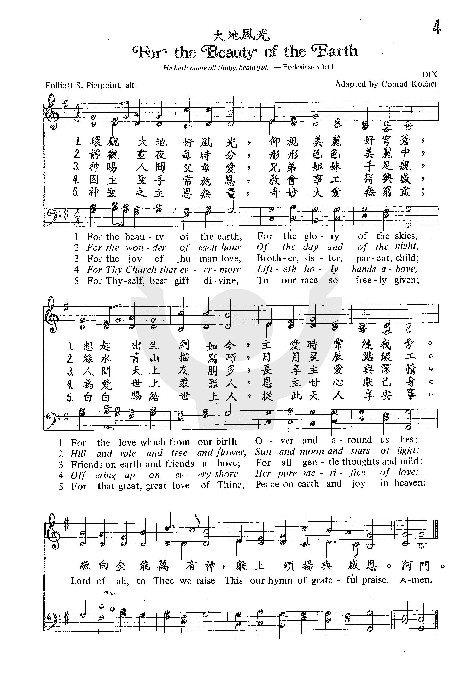
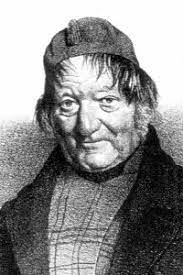

0019 014 For the Beauty of the Earth _Pierpoint 環觀大地好風光 DIX
▲
| 簡介
For the
Beauty of the Earth |
| In the course of many revisions, the
original eucharistic emphasis of this text has shifted to a hymn of
thanksgiving for a wide range of human experience, with a Christological
summation. It is set here to the tune that is customary in North
America, though not elsewhere. |
|
|
|
|
1 For the beauty of the earth,
for the glory of the skies,
for the love which from our birth
over and around us lies.
Refrain:
Christ, our Lord, to you we raise
this, our hymn of grateful praise.
2 For the wonder of each hour
of the day and of the night,
hill and vale and tree and flower,
sun and moon and stars of light, [Refrain ]
3 For the joy of human love,
brother, sister, parent, child,
friends on earth, and friends above,
for all gentle thoughts and mild, [Refrain]
4 For yourself, best gift divine,
to the world so freely given,
agent of God's grand design:
peace on earth and joy in heaven. [Refrain]
Psalter Hymnal, 1987
|
環觀大地好風光，仰視無邊美穹蒼，
想起出生到如今，慈愛時常繞我旁：
靜觀晝夜每時辰，形形色色美難明，
好花佳木遍田野，日月星辰懸太空：
主賜耳聰目亦明，心神強健樂滿盈，
耳聞目見都和諧，表明主愛與全能：
世間惟愛繫人群，父母兄弟樂天倫，
四海之內多朋友，愛重情深百福臨：
基督教會極輝煌，人間四處遍擴張，
福音恩光永張顯，照亮一切暗地方：
副歌：
敬向全能萬有神，獻上讚美感謝心。
|
|
https://www.zanmeishige.com/tab/25313.html?songbook=1&index=4


https://hymnary.org/text/for_the_beauty_of_the_earth |
|
|
https://blog.xuite.net/freedr/twblog/165807560-For+The+Beauty+Of+The+Earth
詩篇十九:1 ：「諸個天講起上帝的榮光：穹蒼報揚伊的手所做的。」
詩篇二十四:1~2：「地及其中所充滿的，世界及站佇伊中間的攏屬耶和華。」
作詞者皮爾朋(FOLLIOT SANDFORD PIERPOINT,
1835~1917)於英格蘭中部巴斯(Bath)，是聖公會的會友，自劍橋大學皇后學院畢業後曾在Somersetshire
College教授古典文學，之後成為獨立作家。皮爾朋曾出版七冊詩集，但以這首詩最為世人所熟知。

在 1864
年晚春時節，作者因有感於家鄉巴斯雅文(Avon)河畔綺麗的風光，而寫下本詩，全詩在頌讚造物主的創造，衪創造了美麗的日月星辰、山水花木、四時輪替的風光美景，也賜給我們有耳能聽、有眼能看、有自由的心智能去感受和諧的聲韻與景緻，更提醒我們週遭的父母兄弟姊妹至親好友這些關係豐富了我們生命歷程，這些的一切均要以頌讚及感謝獻上為祭。
最早是收錄在Orby Shipley所著的Lyra Eucharistica 1864版之中，用為聖餐詩歌之用，標題為讚美的獻祭(The
Sacrifice of
Praise)，由於部份歌詞具有神學爭議，原詩有八節各六行，大部份的詩集均只節錄五或六節，刪除了較有天主教色彩具聖母崇拜的第七、八節，並將原詩的第五節'For
thy Church which evermore ...' 替換成'For thy Bride that evermore ...'.。有些詩集也將原詩的副歌
Lord of all, to thee we raise this our sacrifice of praise"獻上讚美感謝祭"，改為Christ our
God, to Thee we raise this our hymn of grateful praise"獻上讚美感謝心 或 敬獻詩歌讚美神"。
http://www.congsing.org/for_the_beauty.html
Folliott S. Pierpoint, 1864
Addressed to God
|
For the beauty of the earth, |
Eccl. 3:11 |
|
for the glory of the skies, |
Ps. 19:1; 69:34 |
|
for the love which from our birth |
Ps. 22:10; 23:6; 71:6; Matt. 5:45 |
|
over and around us lies, |
Ps. 5:11; 119:64; Prov. 3:3 |
|
Lord of all, to thee we raise |
|
|
this our hymn of grateful praise. |
Ps. 68:4; 103:2 |
|
|
|
|
For the beauty of each hour |
|
|
of the day and of the night, |
Ps. 19:2; 42:8; Jer. 33:25 |
|
hill and vale, and tree and flow’r, |
Gen. 1:12; Ps. 121:1; Is. 63:14 |
|
sun and moon and stars of light, |
Ps. 148:3; Jer. 31:35 |
|
Lord of all, to thee we raise |
|
|
this our hymn of grateful praise. |
|
|
|
|
|
For the joy of ear and eye, |
Prov. 20:12; Matt. 13:16; Luke 18:43 |
|
for the heart and mind’s delight, |
Ps. 111:2 |
|
for the mystic harmony |
|
|
linking sense to sound and sight, |
1 Sam. 24:11; John 20:27 |
|
Lord of all, to thee we raise |
|
|
this our hymn of grateful praise. |
|
|
|
|
|
For the joy of human love, |
Song 1:4; 4:10; Phil. 1:3–9 |
|
brother, sister, parent, child, |
Ps. 127:3; Prov. 17:17; 1 John 3:14 |
|
friends on earth and friends above, |
2 Sam. 1:26 |
|
for all gentle thoughts and mild, |
Phil 4:8; 1 Tim. 2:8 |
|
Lord of all, to thee we raise |
|
|
this our hymn of grateful praise. |
|
|
|
|
|
For each perfect gift of thine |
James 1:17 |
|
to our race so freely giv’n, |
1 Tim. 6:17 |
|
graces human and divine, |
|
|
flow’rs of earth and buds of heav’n, |
1 Cor. 13:12 |
|
Lord of all, to thee we raise |
|
|
this our hymn of grateful praise. |
|
Ask Christians why they praise God and most will probably answer with the
gospel message—that God sent his son Jesus Christ to reconcile us to himself.
This is a good answer and perhaps the best one. No sooner is it said, however,
than it prompts a number of other questions. All of them could be summarized
thus: what is God that you would wish to be reconciled to him? When we say
that we praise God because he reconciled us to himself, what we really mean is
that God is great and good, and that we praise him because he reconciled us to
such a great and good person as himself. But how do we know of his greatness
and goodness? Sure, we know God through the Scriptures, but what sense would
even God’s holy Word make to us had we not his works of creation and
providence? Had we never seen the heavens, we could hardly believe that they
declare God’s glory (Ps. 19). Had we never seen a sheep, we could hardly
imagine how like them we are, or how like a good shepherd God is (Ps. 23).
And, had God never brought us out of a dire situation or led us into one for
the purposes of testing, probably a third of Scripture’s meaning would be lost
on us. It makes sense, then, for a meaningful part of a congregation’s song to
be given over to praising God for his works of creation and providence. One
may rightly ask, “were we not commanded to let the word of Christ, not the
works of Christ, dwell richly in us?” Yes, but the word of Christ is our model
for praising God for his works, beginning in Genesis 1 and continuing until
sun and moon will shine no more. The hymn printed above is little more than a
partial list of the works of God’s creation and providence, yet it is a wise
selection arranged in a memorable poetic form with a refrain that helps us
rightly direct our delights to God.
The hymn begins and ends with a comprehensive pairing (“earth” and “skies”;
“flow’rs of earth and buds of heav’n”) and a definition of that pairing (“the
love which . . . over and around us lies”; “each perfect gift of thine”).
Beauty is thus identified as an emblem of God’s love for us, a love that began
even at our sinful birth. It is identified as a perfect gift given to mankind.
And it is. But beauty is more than this. It is heaven beginning to spring up
on earth. It is a foretaste of glory divine.
In the stanzas in between, we chronicle to each other the many things that
show us how God loves us and reveals his heaven to us in this life—in the
passage of time, in landscape and botany, in the celestial bodies, in the
senses, intellect, and the way they work together, in our own mortal loves.
This last one is a good one to end on, for it recalls the “love . . . from our
birth” of the first stanza and prepares us for the final stanza’s insistence
that all these beauties are part of a love relationship more than mortal.
If the pleasures of this life are so important, why doesn’t the church sing
about them more often? The answer is abundantly clear in Scripture. We are
tempted to worship and serve the creature rather than the creator (Rom. 1:25).
Much of the near pantheism of some forms of nineteenth-century Christianity
gives witness to what happens if we place a wrong emphasis on this world. This
hymn’s refrain, and the very grammar that serves it, is the expedient we need
to avoid this error. For each stanza is really no more than a prepositional
phrase that attends the refrain.
The hymn-tune DIX serves
this grammar admirably. The tune has two musical lines, the first of which is
repeated to set the text of each stanza, and the second of which sets the
refrain. The first is tentative—even furtive. It’s first leap (from the last
syllable of ‘beauty” to “of”) seems uncomfortable because it is a leap to a
note that really wants to resolve down (as it does on “earth”). There’s
nothing easy about jumping up to a platform that is falling. After this clumsy
acrobatics, the first line ends by muttering around low “sol” (“of the
skies”). The refrain, where we finally name the object of our praise, offers
satisfaction to all this. It begins on “mi,” which was the note of arrival for
the first line’s first phrase. That is, the second line of music begins at the
first line’s halfway mark. And after an initial descent on “Lord of all,” we
cover altitude more quickly than we’ve yet done and finally reach high “sol”
on the word “thee,” here referring to God. All of the hymn’s observations are
directed, not to the objects of creation and providence, but to God himself.
The first three notes of the second phrase of the first line return at the
corresponding place in the second line to be combined now with the
uncomfortable leap from the first phrase—only now the leap occurs where it
seems to belong, on the weakest beat of the measure, and it resolves
decisively with a march down the scale to “do” on the word “grateful.”

https://hymnary.org/text/for_the_beauty_of_the_earth
Folliett Sandford Pierpoint originally wrote this hymn for use during the
Communion of the High Anglican Church. The original refrain "Christ, our God, to
thee we raise; This our sacrifice of praise" was meant to mirror the portrayal
of Christ's ultimate sacrifice -- just as the host would be lifted during the
communion as a token of God's gift to us, a "sacrifice of praise" would be
lifted in return. Later editions of the text emphasize the thanksgiving aspect
of the verses. --Greg Scheer, 1995
In 1863, Folliott S. Pierpoint was wandering through the English countryside
around the winding Avon River. As he looked on the peaceful beauty surrounding
him, he was inspired to reflect on God’s gifts to his people in creation and in
the church. Above all, Pierpoint thought of the sacrifice of Christ, in the
greatest of sacrifices, that of his life in return for ours. He thus originally
wrote the text of “For the Beauty of the Earth” as a hymn for the Lord’s Supper.
The original chorus read, “Christ, our God, to thee we raise this, our sacrifice
of praise.” The hymn was meant not only as a song of thanksgiving, but as the
only thing we could give Christ in return for his mercy and love: a hymn of
praise laid upon the altar as a sacrifice. Editors have since altered the
refrain so it has become a more generic hymn of thanksgiving, but as it stands,
it takes on a deeper meaning when understood as something we not only sing, but
offer up to God.
Text:
Most hymnals today include four or five verses of the original eight. The Psalter
Hymnal leaves out this verse, which is included in many other hymnals:
For the church that evermore
Lifteth holy hands above,
Offering up on every shore
Her pure sacrifice of love.
I think this is a beautiful verse simply because it acknowledges that the church
is a gift – we did not come together on our own accord or through our own
initiatives, but rather God has given us communion with each other through the
body of Christ. This is truly something to be celebrated.
As Albert Bailey writes in his book, The Gospel in Hymns, in each
verse, “the objects that arouse our gratitude are mentioned without much logical
connection: the poet just thinks of as many sources of joy as possible and puts
them down as they come to mind.” Rough commentary, but later he writes, “As we
sing this hymn…we enjoy the memories and emotions aroused by the poet’s
pictures. Perhaps this is praise enough to please God” (Bailey, 368). The
simplicity of this text helps us lift our voices honestly and, of course,
gratefully.
Tune:
The tune DIX was written by Conrad Kocher and adapted by William Henry Monk. It
is a simple melody much loved by congregations, and most hymnals have it in the
key of G. I find that there are two predominant ways to do this hymn. If you’re
using an organ or heavier sounding accompaniment, it’s best to keep the tune
moving at a quicker pace so it doesn’t get weighed down and dragged. If you’re
using a guitar or light piano, then you can take your time a bit more, and enjoy
the simple, lilting feel of the melody.
Here are a few different versions for arranging inspiration:
-
Sam Levine’s Celtic instrumental version
-
John Rutter’s fabulous choral arrangement. It has a different tune, and
probably won’t work for congregational singing, but it would be a great
contender for an offertory or prelude if the hymn was being used in the
service
-
Indelible Grace’s simple guitar driven version (igracemusic.com)
When/Why/How:
Some recommended accompaniment resources are:
Other worship resources:
Laura de Jong,
Hymnary.org
https://www.umcdiscipleship.org/resources/history-of-hymns-for-the-beauty-of-the-earth
BY C. MICHAEL HAWN
"For the Beauty of the Earth"
by Folliot S. Pierpoint,
The United Methodist Hymnal, No. 92
C. Michael Hawn
For the beauty of the earth,
For the glory of the skies,
For the love which from our birth,
Over and around us lies;
Lord of all, to thee we raise
This our hymn of grateful praise.
Folliot Sandford Pierpoint (1835-1917), a graduate of Queens’ College, Cambridge
(BA, 1857), and a teacher of classics at Somersetshire College, has provided us
with one of the most enduring hymns in Christian hymnals.
Pierpoint was the author of several poetry collections, including The Chalice of
Nature and Other Poems (1855), Songs of Love, the Chalice of Nature, and Lyra
Jesu (2nd Edition, 1858). The words of this hymn appeared in Lyrica Eucharistica,
The Hymnal Noted (second edition, 1864).
As the title of the collection in which the hymn was published indicates, this
hymn was originally written for the celebration of the Eucharist. The original
poem was published in eight, four-line stanzas under the title, “The Sacrifice
of Praise.” British hymnologist J. R. Watson suggests, “It is said to have been
inspired by the view of Pierpoint’s native city of Bath on a spring day.” The
original refrain, “Christ, our God, to thee we raise/This our sacrifice of
praise,” reflects the theology of the Lord’s Supper as a sharing in Christ’s
sacrifice. “For the beauty of the earth” appeared in the final “Miscellaneous
Hymns” section of Lyra Eucharistica, echoing the post-Communion prayer in the
Book of Common Prayer (1662): “. . . we thy humble servants desire thy fatherly
goodness mercifully to accept this our sacrifice of praise and thanksgiving. . .
.” Alterations made to the hymn and approved by the author made it useful for a
broader range of liturgical occasions.
The original eight stanzas have been pared down to six for The United Methodist
Hymnal. Each stanza paints a picture of gratitude embodied in some aspect of
God’s creation: the earth (stanzas 1 and 2), the senses (stanza 3), “human love”
(stanza 4), the church – in the original, “thy Bride” – (stanza 5), and the gift
of God as manifest in Christ (stanza 6).
Omitted stanzas include themes characteristic of historical and theological
views of hymns written by Church of England hymnwriters, the martyrs and
prophets, and the Virgin Mary and the incarnation:
For thy Martyrs’ crown of light,
For the Prophets’ eagle eye,
For thy bold Confessors’ might,
For the lips of infancy:
Christ our God, to thee we raise
This our sacrifice of praise.
For thy Virgins’ robes of snow,
For thy Maiden-mother mild,
For thyself, with hearts aglow,
Jesu, Victim undefiled:
Offer we at Thine own Shrine
Thyself, sweet Sacrament Divine.
The later refrain, “Lord of all, to thee we raise This our hymn of grateful
praise,” broadens the focus of the original hymn from Christ’s sacrifice to one
of gratitude for all creation and “Lord of all.”
Alterations to the original “Christ, our God. . . “ have been many, some of
which are poetically and theologically weaker, for example, “Gracious God.” A
long tradition exists that God died on the cross. The Fifth Ecumenical Council
(553 C.E.) holds that “our Lord Jesus Christ, who was crucified in the flesh, is
true God, and the Lord of glory [I Cor. 2:8], and one of the Holy Trinity.” Thus
Pierpoint follows a long tradition that equates Christ and God. As a eucharistic
hymn in its original form, this theology is continued. The late Australian
hymnologist Wesley Milgate lamented the changes to the refrain: “Practically
every recent hymnal has a different version of the refrain, apparently fearful
of the treading on the corns of ‘liberal’ theologians and those who
shilly-shally with an essential part of the Christian doctrine.” Pierpoint
himself, according to Professor Watson, “defended his original text, noting that
Pliny, in his letter to Trajan, had described Christians as singing hymns to
Christ as God.”
The concrete images of this text make it ideal for children of all ages.
The theological
scope of this hymn differs from many others on this theme. For example, earlier
hymns by
Isaac Watts – “I sing the almighty power of God” (United Methodist Hymnal, 152)
from 1715 – and
Cecil Frances Alexander – “All things bright and beautiful” (United Methodist
Hymnal, 147) from 1848 –
focus on the
natural created order. Both of these hymns were written to expound on the first
article of the Apostles’ Creed, “I believe in God the Father, Maker of heaven
and earth,” for children. Pierpoint, writing for the Eucharist, expands the
discussion beyond the natural created order to humanity, the church, and, in the
original, the martyrs, prophets, and the incarnation.
The final stanza addresses Christ himself as a gift:
For thyself, best Gift Divine,
to the world so freely given,
for that great, great love of thine,
peace on earth, and joy in heaven.
In the final line, Pierpoint joins hymn writers throughout the ages by echoing
the cosmic connection between heaven and earth found in Luke 2:14: “Glory to God
in the highest, and peace on earth . . . .” (KJV)
Conrad Kocher’s tune DIX (1838) is not the only tune to which this text is sung,
but is undoubtedly the most popular in the United States. British Composer John
Rutter (b. 1945) renewed interest in this text with his popular anthem setting
composed in 1978.
C. Michael Hawn is University Distinguished Professor of Church Music, Perkins
School of Theology, SMU.
https://www.hymnologyarchive.com/for-the-beauty-of-the-earth
with DIX
LUCERNA LAUDONIAE
ENGLAND’S LANE
I. Text: Origins
If hymns like “Count your blessings” invite us to pause and take account of
the good gifts of heaven, then hymns like “For the beauty of the earth” help us
to start that list. This hymn of thanksgiving was written by Anglican educator
and poet Folliott S. Pierpoint (1835–1917) and first published in the 2nd
edition of Lyra Eucharistica (London, 1864 | Fig. 1), a collection of hymns in
six categories intended for use at Communion. Pierpoint’s hymn was in part six,
Eucharistic Hymns Ancient & Modern, in eight stanzas of six lines, without
music, including a two-line textual refrain, “Christ, our God, to Thee we raise
/ This our sacrifice of praise.” The last two lines of the hymn depart from the
pattern and read instead, “Offer we at Thine own shrine / Thyself, sweet
Sacrament Divine.”
View fullsize FortheBeauty-LyraEucharistica-1864_001a.jpg View fullsize
FortheBeauty-LyraEucharistica-1864_001b.jpg View fullsize
FortheBeauty-LyraEucharistica-1864_002a.jpg Fig. 1. Lyra Eucharistica, 2nd ed.
(London: Longman, Green, Longman, Roberts and Green, 1864). II. Text: Analysis
The text covers a wide array of subjects, starting with nature, then human
senses and human relationships, summed in stanza five as “graces human and
divine,” with that stanza potentially serving as an ending point if the hymn is
to be reduced for length. The sixth stanza pictures the worshiping church across
the earth, the seventh points backward to saints who have gone before, and the
eighth finally points to the gift of Christ himself.
The phrase “sacrifice of praise,” and possibly the broader concept of the
hymn, comes from passages such Hebrews 13:15 (“By him therefore let us offer the
sacrifice of praise to God continually, that is, the fruit of our lips giving
thanks to his name,” KJV; see also Psalm 27:6, Jeremiah 17:26 & 33:11). This
phrase also connects to a prayer in the Communion service of the Book of Common
Prayer, 1662 revision (“O Lord and heavenly Father, we thy humble servants
entirely desire thy fatherly goodness, mercifully to accept this, our sacrifice
of prayer and thanksgiving”). The doctrine of the church as representing the
bride of Christ (st. 6) can be found in many passages, such as Matthew 25:1–13
or Revelation 19:6–10. “Robes of snow” (st. 8) pictures the heavenly images of
Revelation 6:11 and 7:9–14.
Pierpoint’s text is usually abbreviated and altered, especially the refrain.
Many hymnals have followed the example set by Hymns Ancient & Modern, starting
with the 1904 edition, where the refrain was altered to “Lord of all, to Thee we
raise, this our grateful hymn of praise.” This revision (and others like it)
weakens the original text in a couple of ways. Since the original title is “The
Sacrifice of Praise,” the revision loses not only the focal point of the text,
it omits richly biblical language, as described above. Frank Colquhoun, in his
Hymns that Live (1980), p. 185, leaned more into this change:
The words are thus addressed specifically to our Lord as the Incarnate Son,
and the ‘sacrifice of praise’ is quite clearly the eucharistic sacrifice. The
language is that of the Prayer Book liturgy. . . . In its amended form, the
refrain is deprived of its sacramental character. . . . There is certainly
something to be said for the changes which have been made, and which were
introduced, it seems, with the author’s permission. They have the advantage of
giving the hymn a broader appeal and a less limited use. At the same time, it is
well to bear in mind the purpose and pattern of the hymn as it was conceived in
the mind of the man who wrote it.
Even though the editors of Hymns Ancient & Modern claimed that their
revisions were approved by the author,[1] Pierpoint preferred his original
version, and addressed some of the criticism of his refrain:
Much objection has been taken to the phrase “Christ our God” in the refrain.
In some hymn-books it is altered to “Father, unto Thee.” Mr. Pierpoint answered
a correspondent who raised this objection, thus: “Pliny in his letter to the
Emperor said the Christians, when meeting in worship, sang a hymn to Christ as
God. As the only public service of the Church was the daily Eucharist, I
addressed my hymn to ‘Christ, our God.’”[2]
Changes to the text and varying selections of stanzas are common and are
warranted to greater or lesser degrees. The common alteration from “brain’s” to
“mind’s” in stanza 3 appeared as early as 1867 in Hymns and Psalms for Divine
Worship (London) and is reported to be approved by the author. Eight stanzas are
usually too many to sing all at once but could be performed in intervals, either
throughout one service or across a series of services.
III. Tunes
1. DIX
This hymn is frequently paired with DIX, which is a German tune by Conrad
Kocher (1786–1872), adapted by William Monk (1823-1889) for Hymns Ancient &
Modern (1861), where it was intended for the hymn “As with gladness men of old,”
by William Chatterdon Dix (thus the tune name). The connection between
Pierpoint’s text and Monk’s adapted tune is unclear, but these two appeared
together as early as 1884 in Hymns of Praise with Tunes (NY: Biglow & Main |
Hymnary.org). More information on the history of this tune can be found in the
article for “As with gladness men of old.”
2. LUCERNA LAUDONIAE
LUCERNA LAUDONIAE is by David Evans (1874–1948), written for Pierpoint’s hymn
and first published in The Church Hymnary, Revised Edition (Oxford: University
Press, 1927 | Fig. 2) under the pseudonym Edward Arthur. The tune name means
“Lantern of the Lothians,” probably a nod to Rev. G. Wauchope Stewart, one of
the editors of The Church Hymnary, and minister of St Mary’s Church, Haddington,
East Lothian, Scotland.

View fullsize Fig. 2. The Church Hymnary, Revised Edition (Oxford: University
Press, ©1927), excerpt. Fig. 2. The Church Hymnary, Revised Edition (Oxford:
University Press, ©1927), excerpt.
3. ENGLAND’S LANE
ENGLAND’S LANE was first printed in the Public School Hymn Book (London:
Novello, 1919 | Fig. 3), where it was set to Pierpoint’s text and originally
named GOODFELLOW. It was adapted by Geoffrey Shaw (1879–1943) from an
unspecified English melody. It was renamed ENGLAND’S LANE in Songs of Praise
(Oxford: University Press, 1925). Among the various tunes for this text, this
one has the widest vocal range.

View fullsize Fig. 3. Public School Hymn Book (London: Novello, 1919). Fig.
3. Public School Hymn Book (London: Novello, 1919).
by CHRIS FENNER for Hymnology Archive 8 November 2018
Footnotes: Hymns Ancient & Modern Historical Edition (London: William Clowes
& Sons, 1909), p. 455.
Handbook to the Church Hymnary, with Supplement, ed. Millar Patrick (Oxford:
University Press, 1935), suppl. p. 4.
Related Resources: John Julian, “Folliott Sandford Pierpoint,” A Dictionary
of Hymnology (London, 1892), p. 895: Google Books
Frank Colquhoun, “For the beauty of the earth,” Hymns that Live (Downers
Grove, IL: InterVarsity Press, 1980), pp. 184–190.
Thomas A. Remenschneider & Alec Wyton, “For the beauty of the earth,” The
Hymnal 1982 Companion, vol. 3B (NY: Church Hymnal Corp., 1994), no. 416.
Edward Darling & Donald Davison, “For the beauty of the earth,” Companion to
Church Hymnal (Dublin: The Columba Press, 2005), pp. 485–487.
Carl P. Daw Jr., “For the beauty of the earth,” Glory to God: A Companion
(Louisville: Westminster John Knox, 2016), pp. 16–17.
Leland Ryken, “For the beauty of the earth” 40 Favorite Hymns for the
Christian Year (Phillipsburg, NJ: P&R, 2020), pp. 118–120.
“For the beauty of the earth,” Hymnary.org: https://hymnary.org/text/for_the_beauty_of_the_earth
J.R. Watson, “For the beauty of the earth,” Canterbury Dictionary of
Hymnology: http://www.hymnology.co.uk/f/for-the-beauty-of-the-earth
http://blog.sina.com.cn/s/blog_763789530101gs6q.html
此博文包含图片此博文包含音乐 (2013-
约翰•卢特(John
Rutter，1945年9月24日—)是一位英国作曲家及合唱指挥，擅长处理大型圣乐合唱作品，曾编写多首圣乐作品，包括《荣耀颂》(Gloria)、《安魂曲》(Requiem)、《大地好风光》(For
the Beauty of the Earth)、《一切美丽光明物》(All Things Bright and Beautiful)等。
卢特于剑桥Clare
College进修音乐，并于1975至1979年期间于该学院任职管风琴学者及音乐主任。他1981年于1981年成立剑桥合唱团(Cambridge
Singers)，于其中担任指挥，并以他旗下的Collegium
Records名义制作多首圣乐作品录音。卢特现居英国剑桥，并经常与各地不同合唱团及交响乐团合作。
卢特的创作多属合唱类型，其中包括有赞美诗、圣诞歌及教会礼仪用诗歌。除此以外，他亦有创作非宗教性质的诗歌。卢特亦擅长编曲，以怀古的手法融入音乐中，他的圣乐作品令人感到平静、庄严，却又不会流于陈旧、过时；他亦曾改编多首美国黑人灵歌，以不同的元素融入作品中，不断扩展圣乐合唱的领域，令他成为二十世纪众多音乐家中，在圣乐合唱方面最受重视的一位。
卢特作品众多，除个人创作外，他亦经常与合唱团演绎不同作品，并以他旗下的Collegium公司发行，以下列出卢特曾发行的作品光碟名称及其中的代表作：
Gloria, the Sacred Music of John Rutter
Gloria：《荣耀颂》，由三个乐章组成的圣乐作品
All Things Bright and Beautiful：《一切美丽光明物》
A Gaelic Blessing：《盖尔人的祝祷文》
For the Beauty of the Earth：《大地好风光》
The Lord Bless You and Keep You：《愿主赐福保护你》
Mass of the Children
Look at the World
To Everything There is a Season
Wings of the Morning
A Banquet of Voices, Music for Multiple Choirs
Gregorio Allegri's Miserere mei, Deus：阿雷格里的《主，请垂怜我》
Antonio Caldara's Crucifixus
Feel the Spirit and Birthday Madrigals
Joshua Fit the Battle of Jericho
When the Saints Go Marching in
Lord of the Dance
Requiem
Pie Jesu
Magnificat
Fancies
Carols for Choirs
https://en.wikipedia.org/wiki/For_the_beauty_of_the_earth_(Rutter)
Rutter set the first four stanzas of
the 1864 hymn "For
the Beauty of the Earth" by Folliott
Sandford Pierpoint.[2][3] Pierpoint
had written eight stanzas as a hymn for the Eucharist with
a refrain addressing "Christ, our God". It appeared in his hymnal Lyrica
Eucharistica, The Hymnal Noted, entitled "The Sacrifice of Praise".[4] The
poet wrote about his experience of feeling blessed some day when he looked at
the countryside near Bath,
England, reflecting the beauty of the earth, of "each hour of the day and of
the night", and of "the joy of human love".[5] The
hymn was combined in hymnals with the hymn tune "Dix".[5] It
was first used as a communion hymn,
but soon became a favorite for the Thanksgiving season.[5] Rutter,
as others before him, changed the refrain to addressing "God of all", giving it
a more general meaning of thanks and praise for the Creation.[4]
Rutter composed the anthem in 1978.[4] He
dedicated the composition to Rosemary Heffley and the Texas Choral Directors
Association.[6] Heffley
was a choral conductor and music pedagogue, in the 1970s teaching at Mesquite
High School,[7] and
around 1980 the association's director.[8] The
anthem was published by Oxford
University Press in 1980, in a version for mixed choir SATB and
one for two-part choir SA, with accompaniment by keyboard or small orchestra.[9]
The piece is set in 2/2, begins in B-flat major and is marked to be sung
"Happily".[6] It
begins with eight measures of instrumental introduction, with broken chords in
constant flowing eighth-notes[6] in
an obbligato[5] flute
and harp, accompanied by strings.
The sopranos alone
enter,[6] singing
a long lyric melody.[5] The
melody follows the text, first upward, reaching the key note on "earth";[6] it
culminates in the refrain on "Lord of all, to thee we raise", illustrating the
raising, an renders the final line "this our joyful hymn – of praise" with a
soft descent in syncopes.
In the choral version, the men's voices enter in unison in
the second verse. In the third verse, focused on human relationships, the men
sing the melody with the women adding a descant melody. In the final verse, the
melody is given to the altos, with a high counterpoint in sopranos and violin.[5] A
reviewer noted Rutter's gift for composing melodies that are singable by lay
singers and children, and that he "writes for enjoyment ... He gives them
sufficient challenge, specially in keeping the rhythms neat and lively".[10] He
noted Rutter's characteristics as "lingering around a nostalgic third or fifth
of the scale, exercising a catchy phrase in sequences, introducing a little
groovy syncopation".[10]
Recordings[edit]
For the beauty of the earth was first recorded in 1983, with the composer
conducting The
Cambridge Singers[11] and
the City
of London Sinfonia in a collection Be Thou My Vision: Sacred Music by
John Rutter.[10][11] It
was featured in several other collections of music by Rutter, including in 2012
the John Rutter Christmas Album," and chosen to begin the second part, of
other music.[10]
The anthem was recorded in 1996 by the Choristers of St
Paul's Cathedral in London and City of London Sinfonia, conducted by John
Scott for a collection of sacred choral music entitled How can I keep
from singing?.[12] In
1999, Donald Pearson conducted in Denver's
St. John's Episcopal Cathedral Choir, Boys and Girls Choir, accompanied by
organist Eric Plutz and Tom Blomster (glockenspiel).[13] The
Australian Gondwana
Voices included the song in their 2003 album New Light New Hope of
music by mostly living composers, with pianist Sally
Whitwell and conducted by Mark
O'Leary.[14] The
anthem was included in a 2008 recording of 20th century music for children,
performed by the New
London Children's Choir with pianist Alexander Wells, conducted by Ronald
Corp.[15]
http://askherabouthymn.com/tag/hymn-meditation/page/2/
 Folliet
S. Pierpoint (1835-1917), from Bath, England, was a classics teacher at
Somersetshire College. While on a walk one fine spring day, he was inspired to
pen the words we now know as
Folliet
S. Pierpoint (1835-1917), from Bath, England, was a classics teacher at
Somersetshire College. While on a walk one fine spring day, he was inspired to
pen the words we now know as